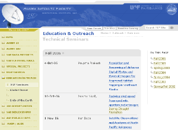

In 2005 I initiated two summer courses covering the principles and applications of SAR and InSAR, each of them one week long. These courses have been offered every year since then and more than 100 students have already benefited from these offerings. The courses drew from a wide audience, from internal UAF graduate students, over national agencies and companies, to international students from Germany, Japan, Russia, Scotland and Thailand.
Mornings include theoretical lectures. Afternoons include hands on experience with data and software tools. This course format is certainly very intense but well appreciated and attended by professionals that do not have the luxury to attend a semester long course at UAF.
In 2002, I initiated the ASF seminar series which initially included short, half-an-hour technical presentations. The goal was to enhance the SAR related knowledge within ASF and to give colleagues within the Geophysical Institute the chance to learn more about SAR. In the meantime we have had presentations on the basics of SAR and InSAR as well as some of their applications. I broadened the scope of the seminar to include presentations on broader remote sensing and GIS topics. The seminar is now also available as a credited course.
I have given a number of presentations myself. The slides of these presentations can be found below.
I am one of the co-instructors of the "InSAR and its applications" (GEOS 639) course. Apart from giving a number of lectures, I provided hands-on training in the use of the ASF software tools and led other lab exercises.
The slides of my lectures are available here:
Here is a selection of a courses and trainings I have given in the past:
| SAR Data and Its Applications (half day) | Photogrammetry & Remote Sensing conference, Portland, Oregon | 2008 |
| Making SAR accessible (half day) | American Society for Photogrammetry & Remote Sensing conference, Tampa, Florida | 2007 |
| International Symposium on Remote Sensing of Environment, San Jose, Costa Rica | 2007 | |
| Alaska Surveying and Mapping Conference, Fairbanks, Alaska | 2007, 2008 | |
| SAR training course (one week) | Instituto Brasileiro de Geografia e Estatística, Rio de Janeiro, Brazil | 2007 |
I routinely give guest lectures (since 2002) in the GEOS 422 course introducing the concepts and applications of SAR and SAR interferometry.
{kind=link}
{kind=link}